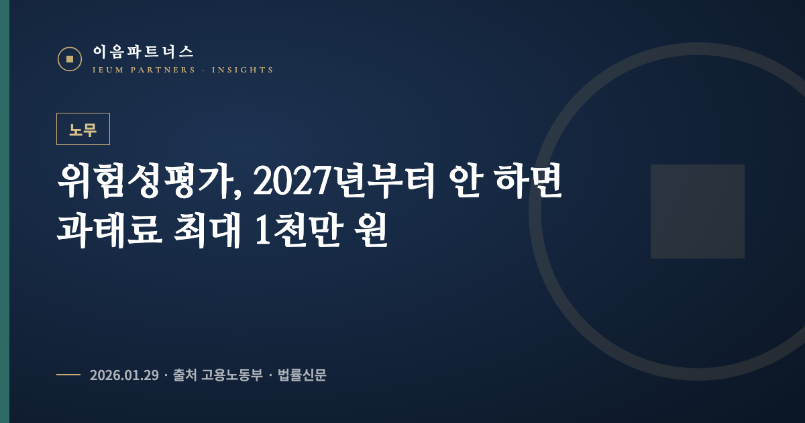

위험성평가, 2027년부터 안 하면 과태료 최대 1천만 원

위험성평가는 사업장의 유해·위험 요인을 찾아 개선하는 절차입니다. 2026년 1월 29일 국회를 통과한 개정 산업안전보건법에 따라 근로자대표 참여와 결과 공유 같은 새 절차는 2026년 6월 1일부터 시행 중이고, 위반 과태료는 회사 규모에 따라 2027년과 2028년부터 적용됩니다. 이 글에서는 바뀐 절차와 과태료 기준, 대표님이 준비할 것을 정리합니다.
50인 이상 사업장은 2027년 1월 1일부터 바로 과태료가 적용되므로, 지금 준비 상태를 확인해 두는 것이 좋습니다. 우리 회사가 언제부터 적용되는지 궁금하다면 카카오톡 채널 이음파트너스로 물어보셔도 됩니다.
무엇이 바뀌었나
개정법은 위험성평가에 근로자대표 참여를 보장하고, 평가 결과 등 주요 사항을 노동자와 공유하도록 했습니다. 김영훈 장관은 “안전한 일터가 선행되어야 일하는 사람들이 행복할 수 있다”는 원칙이 입법에 반영됐다고 밝혔습니다(고용노동부 보도자료).
고용노동부는 2026년 11월 4일 사업장 위험성평가에 관한 지침도 전부 개정했습니다. 평가를 작업 시작 전에 마치고, 일정을 근로자에게 미리 알리며, 신규 채용자나 작업이 바뀐 근로자에게는 작업 전에 결과를 공유해야 합니다. 근로자대표가 요구하면 일정·방법·범위를 협의해 참여시켜야 합니다(법률신문).
과태료는 언제, 얼마나
| 구분 | 내용 |
|---|---|
| 50인 이상 사업장 | 2027년 1월 1일부터 적용(건설업은 공사금액 50억 원 이상) |
| 50인 미만 사업장 | 2028년 1월 1일부터 적용(건설업은 공사금액 50억 원 미만) |
| 위험성평가 미실시 | 1천만 원 이하 |
| 근로자 미참여·근로자대표 참여 미보장·주요 사항 미공유 등 | 500만 원 이하 |
| 결과 기록·보존 미이행 | 300만 원 이하 |
2026년 감독계획에서도 위험성평가 실시 여부는 모든 점검·감독의 필수 확인 항목이 됐고, 시정 위주의 위험성평가 특화점검은 폐지됐습니다(고용노동부 보도자료). 과태료 적용 전이라도 감독에서 평가 기록을 확인받게 된다는 뜻입니다.
함께 바뀐 안전보건 제도
같은 날 국회를 통과한 개정 산업안전보건법에는 일정 규모 이상 기업의 안전보건 공시제(2026년 8월 1일 시행), 재해 원인조사 범위 확대와 공소 제기 뒤 재해조사보고서 공개, 근로자대표가 추천한 명예산업안전감독관의 감독 참여(2026년 8월 1일 시행)도 담겼습니다(고용노동부 보도자료).
대표님이 지금 확인할 것
- 상시 근로자 수로 볼 때 우리 회사 과태료 적용 시점이 2027년인지 2028년인지
- 위험성평가를 실제로 하고 결과를 기록·보존하고 있는지
- 평가 일정을 미리 알리고, 신규 채용자에게 작업 전에 결과를 공유하는 절차가 있는지
- 근로자대표가 참여를 요구할 때 협의할 방법을 정해 두었는지
참고한 자료
- “안전한 일터 만들기” 제도개선 본격화, 고용노동부 소관 5개 법률안 국회 의결 — 고용노동부 (2026.01.29)
- 매달 바뀌는 노동법, 시행일 놓치면 과태료·형사처벌 — 법률신문 (2026.11.12)
- 현장 밀착형 「2026년 사업장 감독계획」 발표 — 고용노동부 (2026.01.22)
위험성평가는 서류보다 실제로 했다는 기록이 중요합니다. 우리 회사 적용 시점과 준비 상태가 궁금하다면 카카오톡 채널 이음파트너스로 문의해 주세요.
※ 이 글은 일반적인 정보 제공을 위한 것으로, 개별 사안은 세무사·노무사 등 전문가와 함께 확인하시기 바랍니다.